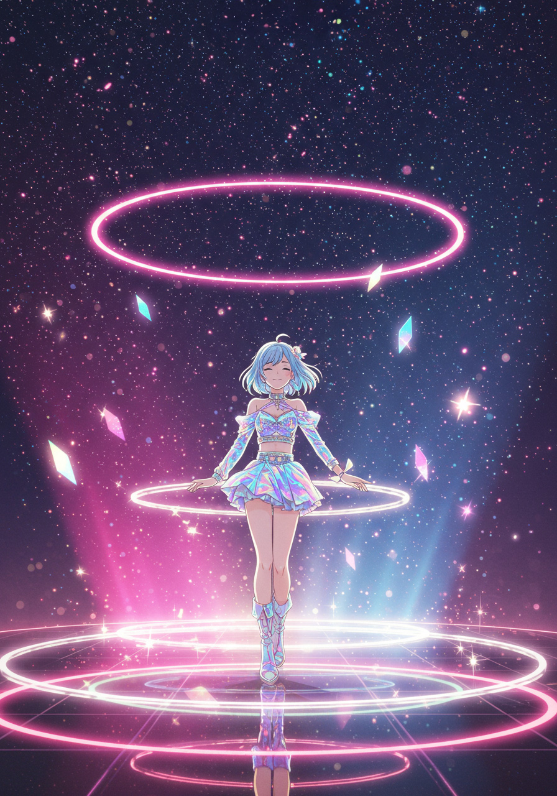

KIRA☆NOVA
（キラ・ノヴァ）
星の瞬きが、あなたの心を灯す。
アーティスト紹介
仮想空間から生まれたバーチャルポップアイドル。
星屑をまとったステージと透明感ある歌声で、
聴く人の心にきらめきを灯す。
出演情報
出演予定：8月10日（土）18:00〜
FOLLOW US

'%3E%3Cdefs%3E%3ClinearGradient id='ig-gradient' x1='0%25' y1='0%25' x2='100%25' y2='100%25'%3E%3Cstop offset='0%25' style='stop-color:%23f58529'/%3E%3Cstop offset='50%25' style='stop-color:%23dd2a7b'/%3E%3Cstop offset='100%25' style='stop-color:%238134af'/%3E%3C/linearGradient%3E%3C/defs%3E%3Cpath d='M12 2.163c3.204 0 3.584.012 4.85.07 3.252.148 4.771 1.691 4.919 4.919.058 1.265.069 1.645.069 4.849 0 3.205-.012 3.584-.069 4.849-.149 3.225-1.664 4.771-4.919 4.919-1.266.058-1.644.07-4.85.07-3.204 0-3.584-.012-4.849-.07-3.26-.149-4.771-1.699-4.919-4.92-.058-1.265-.07-1.644-.07-4.849 0-3.204.013-3.583.07-4.849.149-3.227 1.664-4.771 4.919-4.919 1.266-.057 1.645-.069 4.849-.069zM12 0C8.741 0 8.333.014 7.053.072 2.695.272.273 2.69.073 7.052.014 8.333 0 8.741 0 12c0 3.259.014 3.668.072 4.948.2 4.358 2.618 6.78 6.98 6.98C8.333 23.986 8.741 24 12 24c3.259 0 3.668-.014 4.948-.072 4.354-.2 6.782-2.618 6.979-6.98.059-1.28.073-1.689.073-4.948 0-3.259-.014-3.667-.072-4.947-.196-4.354-2.617-6.78-6.979-6.98C15.668.014 15.259 0 12 0zm0 5.838a6.162 6.162 0 100 12.324 6.162 6.162 0 000-12.324zM12 16a4 4 0 110-8 4 4 0 010 8zm6.406-11.845a1.44 1.44 0 100 2.881 1.44 1.44 0 000-2.881z'/%3E%3C/svg%3E)

皆さんに会える日がとても楽しみです。
ステージでお待ちしてます！
8月10日（土）